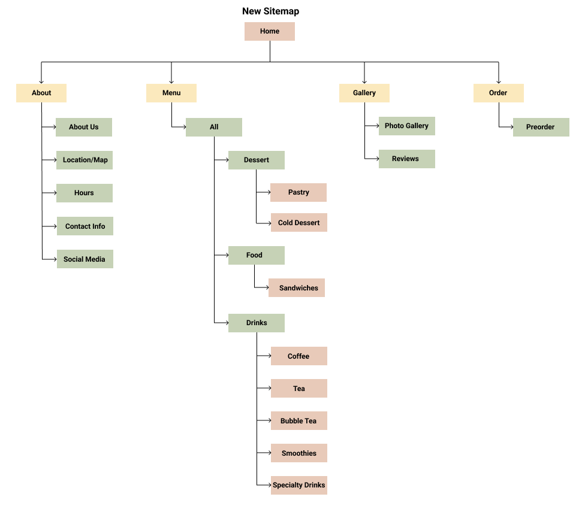

Cafe Clover Website Redesign (WIP)
Overview
Cafe Clover is a coffeehouse in the Greater Philadelphia area that specializes in authentic Korean desserts. It’s a great space to catch up with friends over dessert and beverages. Although Cafe Clover has a cozy ambience and a menu full of tasty items, its website is lacking in some areas and doesn't represent the cafe to its fullest extent.
Original Website
Homepage

Menu

Gallery

The Issue
One of the main issues about this site is the structure of the menu; there is no hierachy to distinguish between the item and the description and no prices listed. The formatting of the menu between the desserts and drinks are different, creating inconsistencies. There are also no prices listed, making it difficult for people to see ahead of time what they are paying if they preorder.
Additionally, the mobile site is unresponsive, making it hard to read text. All of the text that is placed next to photos end up on top instead. In today's age, a lot of people browse on their phone, so having a functional mobile site is crucial if a business wants to communicate their information.


Goals
- Add a filtering system to the menu so that people can find specific menu items easily instead of scrolling through an extensive menu. Users will still be able to scroll through the entire menu, but the filtering system will take them to a specific part based on what they click on. Also, add prices so customers know what they are paying when they preorder or visit in person.
- Make a cohesive site design that is consistent throughout each page.
- Highlight the cafe's qualitites through customer reviews and gallery photos.
- Implement online ordering for quick, easy preordering when people are on the go.
User Research
I conducted a card sort exercise to gauge how users would organize specific items. This was especially geared towards the menu items since I wanted to add a filtering system that could organize items in a way that made sense to users. For the cards, I listed down features of the website and specific menu items. Then, I listed categories I thought would be suitable to group the menu items. I tasked college students who enjoy trying new desserts/drinks or frequent cafes to take this exercise. Participants were to sort the cards into categories, but they were also allowed to make their own categories.
Some information I received from the card sort exercise is listed below:
- Customer reviews and the gallery should go together since users like to see pictures attached with reviews to know what the reviewer is talking about.
- Cafe Clover posts a lot of announcements and limited menu items on their instagram, so it makes sense to put social media on the homepage.
- A user mentioned that bubble teas should have their own categories since there are so many different flavors.
- Drinks such as mojitos, hot chocolate, lemonade, and iced tea should go under the specialty drinks category
Site Map
Based on the card sort exercise, I was able to construct a new sitemap that organized the menu items into specific categories. I kept the general structure of the original sitemap but organized the contents to be more detailed.
Wireframes